화공기사(구) (2020-09-26 기출문제)
1과목: 화공열역학
1. 2성분계 용액(binary solution)이 그 증기와 평형상태 하에 놓여있을 경우 그 계 안에서 독립적인 반응이 1개 있을 때, 평형 상태를 결정하는데 필요한 독립변수의 수는?
- 1
- 2
- 3
- 4
(정답률: 66%)

2. 줄-톰슨(Joule-Thomson) 팽창이 해당되는 열역학적 과정은?
- 정용과정
- 정압과정
- 등엔탈피과정
- 등엔트로피과정
(정답률: 63%)
3. 1기압, 103℃의 수증기가 103℃의 물(액체)로 변하는 과정이 있다. 이 과정에서의 깁스(Gibbs)자유에너지와 엔트로피변화량의 부호가 올바르게 짝지워진 것은?
- △G ＞ 0, △S ＞ 0
- △G ＞ 0, △S ＜ 0
- △G ＜ 0, △S ＞ 0
- △G ＜ 0, △S ＜ 0
(정답률: 56%)
4. 비리얼 방정식(Virial equation)이 Z = 1 + BP 로 표시되는 어떤 기체를 가역적으로 등온압축 시킬 때 필요한 일의 양에 대한 설명으로 옳은 것은? (단, Z = PV/RT, B는 비리얼 계수를 나타낸다.)
- B값에 따르 다르다.
- 이상기체의 경우와 같다.
- 이상기체의 경우보다 많다.
- 이상기체의 경우보다 적다.
(정답률: 57%)
5. 어떤 평형계의 성분의 수는 1, 상의 수는 3이다. 그 계의 자유도는? (단, 반응이 수반되지 않는 계이다.)
- 0
- 1
- 2
- 3
(정답률: 71%)
6. 다음 맥스웰(Maxwell) 관계식의 부호가 옳게 표시된 것은?
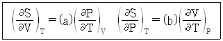
- a : (+), b : (+)
- a : (+), b : (-)
- a : (-), b : (-)
- a : (-), b : (+)
(정답률: 64%)
7. 비리얼 계수에 대한 다음 설명 중 옳은 것을 모두 나열한 것은?
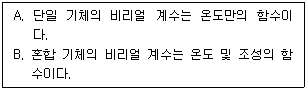
- A
- B
- A, B
- 모두 틀림
(정답률: 66%)
8. 다음의 P-H선도에서 H2 - H1값이 의미하는 것은?
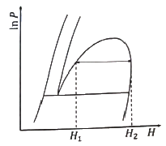
- 혼합열
- 승화열
- 증발열
- 융해열
(정답률: 66%)
9. 열의 일당량을 옳게 나타낸 것은?
- 427 kgf·m/kcal
 kgf·m/kcal
kgf·m/kcal- 427 kcal·m/kgf
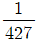
kcal·m/kgf
(정답률: 49%)
10. 100℃에서 증기압이 각각 1, 2atm인 두 물질이 0.5mol씩 들어 있는 기상혼합물의 이슬점에서의 전압력(atm)은? (단, 두 물질은 모두 Raoult의 법칙을 따른다고 가정한다.)
- 0.25
- 0.50
- 1.33
- 2.00
(정답률: 44%)
11. 외부와 단열된 탱크 내에 0℃, 1기압의 산소와 질소가 칸막이에 의해 분리되어 있다. 초기 몰수가 각각 1mol에서 칸막이를 서시히 제거하여 산소와 질소가 확산되어 평형에 도달하였다. 이상용액인 경우 계의 성질이 변하는 것은? (단, 정용 열용량(CV)은 일정하다.)
- 부피
- 온도
- 엔탈피
- 엔트로피
(정답률: 60%)
12. 이상적인 기체 터빈 동력장치의 압력비는 6이고 압축기로 들어가는 온도는 27℃이며 터빈의 최대허용 온도는 816℃일 때, 가역조작으로 진행되는 이 장치의 효율은? (단, 비열비는 1.4이다.)
- 20%
- 30%
- 40%
- 50%
(정답률: 40%)
13. 다음 에너지 보존식이 성립하기 위한 조건이 아닌 것은?
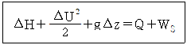
- 열린계(open system)
- 등온계(isothermal system)
- 정상상태(steady state)로 흐르는 계
- 각항은 유체단위 질량당 에너지를 나타냄
(정답률: 46%)
14. 아래와 같은 반응이 일어나는 계에서 초기에 CH4 2mol, H2O 1mol, CO 1mol, H2 4mol이 있었다고 한다. 평형 몰분율 yi를 반응좌표 ε의 함수로 표시하려고 할 때 총몰수(∑ni)를 ε의 함수로 옳게 나타낸 것은?
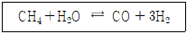
- ∑ni = 2ε
- ∑ni = 2 + ε
- ∑ni = 4 + 3ε
- ∑ni = 8 + 2ε
(정답률: 65%)
15. 25℃에서 프로판 기체의 표준연소열(J/mol)은? (단, 프로판, 이산화탄소, 물(L)의 표준 생성 엔탈피는 각각, -104680, -393509, -285830 J/mol 이다.)
- 574659
- -574659
- 1253998
- -2219167
(정답률: 52%)
16. 열과 일 사이의 에너지 보존의 원리를 표현한 것은?
- 열역학 제0법칙
- 열역학 제1법칙
- 열역학 제2법칙
- 열역학 제3법칙
(정답률: 73%)
17. Carnot 냉동기가 –5℃의 저열원에서 10000 kcal/h의 열량을 흡수하여 20℃의 고열원에서 방출할 때 버려야할 최소 열량(kcal/h)은?
- 7760
- 8880
- 10932
- 12242
(정답률: 57%)
18. 역학적으로 가역인 비흐름과정에 대하여 이상기체의 폴리트로픽 과정(Polytripic process)은 PVn이 일정하게 유지되는 과정이다. 이 때 n값이 열용량비(또는 비열비)라면 어떤 과정인가?
- 단열과정(Adiabatic process)
- 정온과정(Isothermal process)
- 가역과정(Reversible process)
- 정압과정(Isobaric process)
(정답률: 63%)
19. 초임계 유체에 대한 설명으로 틀린 것은?
- 비등 현상이 없다.
- 액상과 기상의 구분이 없다.
- 열을 가하면 온도와 체적이 증가한다.
- 온도가 임계온도 보다 높고, 압력은 임계압력 보다 낮은 범위이다.
(정답률: 65%)
20. 2성분계 공비혼합물에서 성분 A, B의 활동도 계수를 γA와 γB, 포화증기압을 PA 및 PB라 하고, 이 계의 전압을 Pt라 할 때 수정된 Raoult의 법칙을 적용하여 γB를 옳게 나타낸 것은? (단, B성분의 기상 및 액상에서의 몰분율은 yB와 xB이며, 퓨캐시티계수는 1 이라 가정한다.)
- γB = Pt/PB
- γB = Pt/PB(1 – XA)
- γB = PtyB/PB
- γB = Pt/PBXB
(정답률: 46%)
2과목: 단위조작 및 화학공업양론
21. 이산화탄소 20vol%와 암모니아 80vol%의 기체혼합물이 흡수탑에 들어가서 암모니아의 일부가 산에 흡수되어 탑하부로 떠나고, 기체 혼합물은 탑상부로 떠난다. 상부기체혼합물의 암모니아 체적분율이 35%일 때 암모니아 제거율(vol%)는? (단, 산용액의 증발이 무시되고, 이산화탄소의 양은 일정하다.)
- 75.73
- 81.26
- 86.54
- 90.12
(정답률: 53%)
22. 깁스의 상률법칙에 대한 설명 중 틀린 것은?
- 열역학적 평형계를 규정짓기 위한 자유도는 상의 수와 화학종의 수에 의해 결정된다.
- 자유도는 화학종의 수에서 상의 수를 뺀 후 2를 더하여 결정한다.
- 반응이 있는 열역학적 평형계에서도 적용이 가능하다.
- 자유도를 결정할 때 화학종 간의 반응이 독립적인지 또는 종속적인지를 고려해야 한다.
(정답률: 45%)
23. 어떤 공기의 조성이 N2 79mol%, O2 mol%일 때, N2의 질량분율은?
- 0.325
- 0.531
- 0.767
- 0.923
(정답률: 67%)
24. 탄소 70mol%, 수소 15mol% 및 기타 회분 등의 연소할 수 없는 물질로 구성된 석탄을 연소하여 얻은 연소가스의 조성이 CO2 15mol%, O2 4mol% 및 N2 81mol%일 때 과잉공기의 백분율은? (단, 공급되는 공기의 조성은 N2 79mol%, O2 21mol% 이다.)
- 4.9%
- 9.3%
- 16.2%
- 22.8%
(정답률: 31%)
25. 25℃에서 용액 3L에 500g의 NaCl을 포함한 수용액에서 NaCl의 몰분율은? (단, 25℃ 수용액의 밀도는 1.15g/cm3이다.)
- 0.⑤0
- 0.070
- 0.090
- 0.110
(정답률: 50%)
26. 20 wt% NaCl 수용액을 mol%로 옳게 나타낸 것은?
- 1
- 3
- 5
- 7
(정답률: 51%)
27. 0℃, 1atm에서 22.4m3의 혼합가스에 3000kcal의 열을 정압하에서 가열하였을 때, 가열 후 가스의 온도(℃)는? (단, 혼합가스는 이상기체로 가정하고, 혼합가스의 평균분자 열용량은 4.5kcal/kmol·℃이다.)
- 500.0
- 555.6
- 666.7
- 700.0
(정답률: 59%)
28. 100℃에서 내부 에너지 100kcal/kg을 가진 공기 2kg이 밀폐된 용기 속에 있다. 이 공기를 가열하여 내부 에너지가 130kcal/kg이 되었을 때 공기에 전달되는 열량(kcal)은?
- 55
- 60
- 75
- 80
(정답률: 50%)
29. 다음 중 증기압을 추산(推算)하는 식은?
- Clausius-Clapeyron 식
- Bernoulli 식
- Redlich-Kwong 식
- Kirchhoff 식
(정답률: 60%)
30. 특정 성분의 질량분율이 XA인 수용액 L[kg]과 XB인 수용액 N[kg]을 혼합하여 XM의 질량분율을 갖는 수용액을 얻으려고 한다. L과 N의 비를 옳게 나타낸 것은?
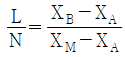
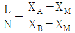
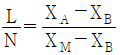
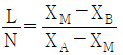
(정답률: 48%)
31. 상접점(plait point)에 대한 설명으로 옳은 것은?
- 추출상과 평형에 있는 추잔상의 점을 잇는 선의 중간점을 말한다.
- 상접점에서는 추출상과 추잔상의 조성이 같다.
- 추출상과 추잔상 사이에 유일한 상접점이 존재한다.
- 상접점은 추출을 할 수 있는 최적의 조건이다.
(정답률: 53%)
32. 기체흡수에 대한 설명 중 옳은 것은?
- 기체속도가 일정하고 액 유속이 줄어드면 조작선의 기울기는 증가한다.
- 액체와 기체의 물 유량비(L/V)가 크면 조작선과 평형곡선의 거리가 줄어들어 흡수탑의 길이를 길게 하여야 한다.
- 액체와 기체의 몰 유량비(L/V)는 맞흐름 탑에서 흡수의 경제성에 미치는 영향이 크다.
- 물질전달에 대한 구동력은 조작선과 평형선 간의 수직거리에 반비례한다.
(정답률: 48%)
33. 20℃, 1atm 공기 중 수증기 분압이 20mmHg일 때, 이 공기의 습도(kg수증기/kg건조공기)는? (단, 공기의 분자량은 30g/mol로 한다.)
- 0.016
- 0.032
- 0.048
- 0.064
(정답률: 58%)
34. 같은 용적, 같은 압력하에서 있는 같은 온도의 두 이상기체 A와 B의 몰수 관계로 옳은 것은? (단, 분자량은 A＞B이다.)
- 주어진 조건으로는 알 수 없다.
- A ＞ B
- A ＜ B
- A = B
(정답률: 52%)
35. 다중효용관에 대한 설명으로 틀린 것은?
- 마지막 효용관의 증기 공간 압력이 가장 높다.
- 첫 번째 효용관에는 생수증기(raw steam)가 공급된다.
- 수증기와 응축기 사이의 압력차는 다중효용관에서 두 개 또는 그 이상의 효용관에 걸쳐 분산된다.
- 다중효용관 설계에 있어서 보통 원하는 결과는 소모된 수증기량, 소요 가열 면적, 여러 효용관에서 근사적 온도, 마지막 효용관을 떠나는 증기량 등이다.
(정답률: 51%)
36. 2중효용간 증발기에서 비점상승이 무시되는 액체를 농축하고 있다. 제1증발관에 들어가는 수증기의 온도는 110℃이고 제2증발관에서 용액 비점은 82℃이다. 제1, 2증발관의 총괄열전달계수는 각각 300, 100W/m2·℃일 경우 제1증발관 액체의 비점(℃)은?
- 110
- 103
- 96
- 89
(정답률: 35%)
37. 다음 중 왕복식 펌프는?
- 기어 펌프(gear pump)
- 볼류트 펌프(volute pump)
- 플런저 펌프(plunger pump)
- 터빈 펌프(turbine pump)
(정답률: 46%)
38. 초미분쇄기(ultrafine grinder)인 유체-에너지 밀(mill)의 분쇄 원리로 가장 거리가 먼 것은?
- 입자 간 마멸
- 입자와 기벽 간 충돌
- 입자와 기벽 간 마찰
- 입자와 기벽 간 열전달
(정답률: 50%)
39. 압력용기에 연결된 지름이 일정한 관(pipe)을 통하여 대기로 기체가 흐를 경우에 대한 설명으로 옳은 것은?
- 무제한 빠른 속도로 흐를 수 있다.
- 빛의 속도에 근접한 속도로 흐를 수 있다.
- 초음속으로 흐를 수 없다.
- 종류에 따라서 초음속으로 흐를 수 있다.
(정답률: 43%)
40. 원통관 내에서 레이놀즈(Reynolds) 수가 1600인 상태로 흐르는 유체의 Fanning 마찰계수는?
- 0.01
- 0.02
- 0.03
- 0.04
(정답률: 43%)
3과목: 공정제어
41. 유체가 유입부를 통하여 유입되고 있고, 펌프가 설치된 유출부를 통하여 유출되고 있는 드럼이 있다. 이 때 드럼의 액위를 유출부에 설치된 제어밸브의 개폐정도를 조절하여 제어하고자 할 때, 다음 설명 중 옳은 것은?
- 유입유량의 변화가 없다면 비례동작만으로도 설정점 변화에 대하여 오프셋 없는 제어가 가능하다.
- 설정점 변화가 없다면 유입유량의 변화에 대하여 비례동작만으로도 오프셋 없는 제어가 가능하다.
- 유입유량이 일정할 때 유출유량을 계단으로 변화시키면 액위는 시간이 지난 다음 어느 일정수준을 유지하게 된다.
- 유출유량이 일정할 때 유입유량이 계단으로 변화되면 액위는 시간이 지난 다음 어느 일정수준을 유지하게 된다.
(정답률: 23%)
42. 편차(offset)는 제거할 수 있으나 미래의 에러(error)를 반영할 수 없어 제어성능향상에 한계를 가지는 제어기는? (단, 모든 제어기들이 튜닝이 잘 되었을 경우로 가정한다.)
- P형
- PD형
- PI형
- PID형
(정답률: 56%)
43. 다음 블록선도에서 서보 문제(servo problem)의 전달함수는?
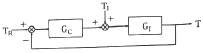
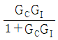
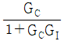
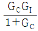
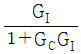
(정답률: 60%)
44. 다음 전달함수를 갖는 계(system) 중 sin 응답에서 phase lead를 나타내는 것은?
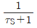
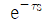
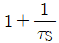
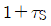
(정답률: 38%)
45. 다음 중 가능한 한 커야 하는 계측기의 특성은?
- 감도(sensitivity)
- 시간상수(time constant)
- 응답시간(response time)
- 수송지연(transportation lag)
(정답률: 57%)
46. 어떤 계의 단위계단 응답이 다음과 같을 경우 이 계의 단위충격 응답(impulse response)은?
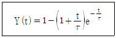
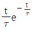
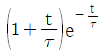
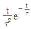
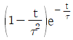
(정답률: 53%)
47. 다음 블록선도의 총괄전달함수(C/R)로 옳은 것은?
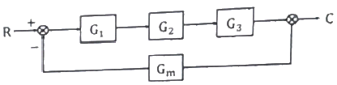
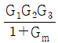
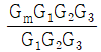
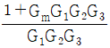
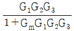
(정답률: 68%)
48. 1차계의 시간상수에 대한 설명이 아닌 것은?
- 시간의 단위를 갖는 계의 특정상수이다.
- 그 계의 용량가 저항의 곱과 같은 값을 갖는다.
- 직선관계로 나타나는 입력함수와 출력함수 사이의 비례상수이다.
- 단위계단 변화시 최종치의 63%에 도달하는데 소요되는 시간과 같다.
(정답률: 46%)
49. 전달함수의 극(pole)과 영(zero)에 관한 설명 중 옳지 않은 것은?
- 순수한 허수 pole은 일정한 진폭을 가지고 진동이 지속되는 응답 모드에 대응된다.
- 양의 zero는 전달함수가 불안정함을 의미한다.
- 양의 zero는 계단입력에 대해 역응답을 유발할 수 있다.
- 물리적 공정에서는 pole의 수가 zero의 수보다 항상 같거나 많다.
(정답률: 25%)
50. 사람이 원하는 속도, 원하는 방향으로 자동차를 운전할대 일어나는 상황이 공정제어 시스템과 비교될 때 연결이 잘못된 것은?
- 눈 - 계측기
- 손 - 제어기
- 발 – 최종 제어 요소
- 자동차 – 공정
(정답률: 46%)
51. 제어계가 안정하려면 특성방정식의 모든 근이 S평면상의 어느 영역에 있어야 하는가?
- 실수부(+), 허수부(-)
- 실수부(-)
- 허수부(-)
- 근이 존재하지 않아야 함
(정답률: 53%)
52. 되먹임 제어(feedback control)가 가장 용이한 공정은?
- 시간지연이 큰 공정
- 역응답이 큰 공정
- 응답속도가 빠른 공정
- 비선형성이 큰 공정
(정답률: 52%)
53. 전달함수가
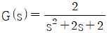
인 2차계의 단위계단응답은?- 1 – e-t(cos t + sin t)
- 1 + e-t(cos t + sin t)
- 1 – e-t(cos t - sin t)
- 1 – et(cos t + sin t)
(정답률: 33%)
54. 폐회로의 응답이 다음 식과 같이 주어진 제어계의 설정점(set point)에 단위계단변화(unit step change)가 일어났을 때, 잔류편차(offset)는? (단, y(s) : 출력, R(s) : 설정점이다.)
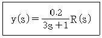
- -0.8
- -0.2
- 0.2
- 0.8
(정답률: 34%)
55. 어떤 공정의 전달함수가 G(s)이고 G(2i) = -1 – i 일때, 공정입력으로 u(t) = 2sin(2t)를 입력하면 시간이 많이 지난 후에 y(t)로 옳은 것은?(오류 신고가 접수된 문제입니다. 반드시 정답과 해설을 확인하시기 바랍니다.)
- y(t) = √2 sin(2t)
- y(t) = -√2 sin(2t + π/4)
- y(t) = 2√2 sin(2t - π/4)
- y(t) = 2√2 sin(2t – 3π/4)
(정답률: 16%)
56. 연속 입출력 흐름과 내부 전기 가열기가 있는 저장조의 온도를 설정값으로 유지하기 위해 들어오는 입력흐름의 유량과 내부 가열기에 공급 전력을 조작하여 출력흐름의 온도와 유량을 제어하고자 하는 시스템의 분류로 적절한 것은?
- 다중 입력 – 다중 출력 시스템
- 다중 입력 – 단일 출력 시스템
- 단일 입력 – 단일 출력 시스템
- 단일 입력 – 다중 출력 시스템
(정답률: 58%)
57. 다음과 같은 보드 선도(Bode plot)로 표시되는 제어기는?
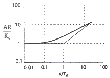
- 비례 제어기
- 비례 – 적분 제어기
- 비례 – 미분 제어기
- 적분 – 미분 제어기
(정답률: 40%)
58. 함수 f(t)(t≧0)의 라플라스 변환(Laplace transtorm)을 F(s)라 할 때, 다음 설명 중 틀린 것은?
- 모든 연속함수 f(t)가 이에 대응하는 F(s)를 가즌 것은 아니다.
- g(t)(t≧0)의 라플라스 변환을 G(s)라 할 때, f(t)g(t)의 라플라스 변환은 F(s)G(s)이다.
- g(t)(t≧0)의 라플라스 변환을 G(s)라 할 때, f(t)+g(t)의 라플라스 변환은 F(s)+G(s)이다.
- d2f(t)/dt2의 라플라스 변환을 s2F(s) - sf(0) - df(0)/dt 이다.
(정답률: 46%)
59. Routh array에 의한 안정성 판별법 중 옳지 않은 것은?
- 특성방정식의 계수가 다른 부호를 가지면 불안정하다.
- Routh array의 첫 번째 컬럼의 부호가 바뀌면 불안정하다.
- Routh array test를 통해 불안정한 Pole의 개수도 알 수 있다.
- Routh array의 첫 번째 컬럼에 0이 존재하면 불안정하다.
(정답률: 46%)
60. PID 제어기의 조율방법에 대한 설명으로 가장 올바른 것은?
- 공정의 이득이 클수록 제어기 이득 값도 크게 설정해 준다.
- 공정의 시상수가 클수록 적분시간 값을 크게 설정해 준다.
- 안정성을 위해 공정의 시간지연이 클수록 제어기 이득 값을 크게 설정해 준다.
- 빠른 폐루프 응답을 위하여 제어기 이득값을 작게 설정해 준다.
(정답률: 27%)
4과목: 공업화학
61. 암모니아 합성방법과 사용되는 압력(atm)을 짝지어 놓은 것 중 옳은 것은?
- Casale법 – 약 300atm
- Fauser법 – 약 600atm
- Claude법 – 약 1000atm
- Haber-Bosch법 – 약 500atm
(정답률: 36%)
62. 니트로벤젠을 환원시켜 아닐린을 얻을 때 다음 중 가장 적합한 환원제는?
- Zn + Water
- Zn + Acid
- Alkaline Sulfide
- Zn + Alkali
(정답률: 57%)
63. Leblanc법 소다회 제조공정이 오늘날 전적으로 폐기된 이유로 옳은 것은?
- 수동적인 공정(batch process)
- 원료인 Na2SO4의 공급난
- 고순도 석탄의 수요증가
- NaS 등 부산물의 수요감소
(정답률: 46%)
64. 다음 원유 및 석유 성분 중 질소 화합물에 해당하는 것은?
- 나프텐산
- 피리딘
- 나프토티오펜
- 벤조티오펜
(정답률: 64%)
65. 염화수소 가스의 직접 합성 시 화학반응식이 다음과 같을 때 표준상태 기준으로 200L의 수소가스를 연소시킬 때 발생되는 열량(kcal)은?
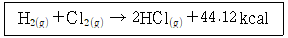
- 365
- 394
- 407
- 603
(정답률: 57%)
66. 전화 공정 중 아래의 설명에 부합하는 것은?
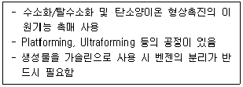
- 열분해법
- 이성화법
- 접촉분해법
- 수소화분해법
(정답률: 44%)
67. 디메틸텔레프탈레이트와 에틸렌글리콜을 축중합하여 얻어지는 것은?
- 아크릴 섬유
- 폴리아미드 섬유
- 폴리에스테르 섬유
- 폴리비닐알코올 섬유
(정답률: 48%)
68. 정상상태의 라디칼 중합에서 모노머가 2000개 소모되었다. 이 반응은 2개의 라디칼에 의하여 개시·성장되었고, 재결합에 의하여 정지반응이 이루어졌을 때, 생성된 고분자의 동역학적 사슬 길이ⓐ와 중합도ⓑ는?
- ⓐ : 1000, ⓑ : 1000
- ⓐ : 1000, ⓑ : 2000
- ⓐ : 1000, ⓑ : 4000
- ⓐ : 2000, ⓑ : 4000
(정답률: 44%)
69. 소금물의 전기분해에 의한 가성소다 제조공정 중 격막식 전해조의 전력원단위를 향상시키기 위한 조치로서 옳지 않은 것은?
- 공급하는 소금물을 양극액 온도와 같게 예열하여 공급한다.
- 동판 등 전해조 자체의 재료의 저항을 감소시킨다.
- 전해조를 보온한다.
- 공급하는 소금물의 망초(Na2SO4) 함량을 2% 이상 유지한다.
(정답률: 58%)
70. 다음 중 설폰화 반응이 가장 일어나기 쉬운 화합물은?
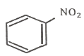
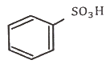
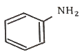
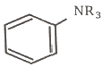
(정답률: 50%)
71. 부식반응에 대한 구동력(electromotive force) E는? (단, △G는 깁스자유에너지, n는 금속 1몰당 전자의 몰수, F는 패러데이 상수이다.)
- E = -nF
- E = -nF/△G
- E = -nF△G
- E = -△G/nF
(정답률: 55%)
72. 양이온 중합에서 공개시제(coinitiator)로 사용되는 것은?
- Lewis 산
- Lewis 염기
- 유기금속염기
- sodium amide
(정답률: 52%)
73. 반도체에서 Si의 건식식각에 사용하는 기체가 아닌 것은?
- CF4
- HBr
- C6H6
- CClF
(정답률: 54%)
74. Friedel – Crafts 반응에 사용하지 않는 것은?
- CH3COCH3
- (CH3CO)2O
- CH3Ch = CH2
- CH3CH2Cl
(정답률: 28%)
75. 석유 정제공정에서 사용되는 증류법 중 중질유의 비점이 강하되어 가장 낮은 온도에서 고비점 유분을 유출시키는 증류법은?
- 가압증류법
- 상압증류
- 공비증류법
- 수증기증류법
(정답률: 44%)
76. 인산 제조법 중 건식법에 대한 설명으로 틀린 것은?
- 전기로법과 용광로법이 있다.
- 철과 알루미늄 함량이 많은 저품위의 광석도 사용할 수 있다.
- 인의 기화와 산화를 별도로 진행시킬 수 있다.
- 철, 알루미늄, 칼슘의 일부가 인산 중에 함유되어 있어 순도가 낮다.
(정답률: 57%)
77. 접촉식 황산 제조 공정에서 이산화황이 산화되어 삼산화황으로 전환하여 평형상태에 도달한다. 삼산화황 1kmol을 생산하기 위해 필요한 공기의 최소량(Sm3)은?
- 53.3
- 40.8
- 22.4
- 11.2
(정답률: 32%)
78. 모노글리세라이드에 대한 설명으로 가장 옳은 것은?
- 양쪽성 계면활성제이다.
- 비이온 계면활성제이다.
- 양이온 계면활성제이다.
- 음이온 계면활성제이다.
(정답률: 38%)
79. 암모니아와 산소를 이용하여 질산을 합성할 때, 생성되는 질산 용액의 농도(wt%)는?
- 68
- 78
- 88
- 98
(정답률: 62%)
80. 다음 중 칼륨비료의 원료가 아닌 것은?
- 칼륨광물
- 초목재
- 간수
- 골분
(정답률: 45%)
5과목: 반응공학
81. 다음 그림은 이상적 반응기의 설계 방정식의 반응시간을 결정하는 그림이다. 회분 반응기의 반응시간에 해당하는 면적으로 옳은 것은? (단, 그림에서 점 D의 CA 값은 반응 끝 시간의 값을 나타낸다.)
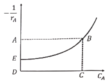
- ABCD
- ABE
- BCDE
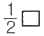
ABCD
(정답률: 52%)
82. 자동촉매반응에서 낮은 전화율의 생성물을 원할 때 옳은 것은?
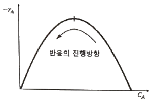
- 플러그흐름반응기로 반응시키는 것이 더 효과적이다.
- 혼합흐름반응기로 반응시키는 것이 더 효과적이다.
- 반응기의 종류와 상관없이 동일하다.
- 온도에 따라 효과적인 반응기가 다르다.
(정답률: 51%)
83. 플러그흐름반응기에서 0차 반응(A→R)이 반응속도가 10mol/L·h 로 반응하고 있을 때, 요구되는 반응기의 부피(L)는? (단, 반응물의 초기공급속도 : 1000 mol/h, 반응물의 초기농도 : 10 mol/L, 반응물의 출구농도 : 5mol/L 이다.)
- 10
- 50
- 100
- 150
(정답률: 40%)
84. R이 목적생산물인 반응(
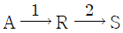
)의 활성화 에너지가 E1＜E2일 경우, 반응에 대한 설명으로 옳은 것은?- 공간시간(τ)이 상관없다면 가능한 한 최저온도에서 반응시킨다.
- 등온 반응에서 공간시간(τ) 값이 주어지면 가능한 한 최고 온도에서 반응시킨다.
- 온도 변화가 가능하다면 초기에는 낮은 온도에서, 반응이 진행됨에 따라 높은 온도에서 반응시킨다.
- 온도 변화가 가능하더라도 등온 조작이 가장 유리하다.
(정답률: 48%)
85. CH3CHO 증기를 정용 회분식반응기에서 518℃로 열분해한 결과 반감기는 초기압력이 363 mmHg일 때 410s, 169 mmHg일 때 880s 이였다면, 이 반응의 반응차수는?
- 0차
- 1차
- 2차
- 3차
(정답률: 42%)
86. 반응 전환율을 온도에 대하여 나타낸 직교좌표에서 반응기에 열을 가하면 기울기는 다열과정보다 어떻게 되는가?
- 반응열의 크기에 따라 증가하거나 감소한다.
- 증가한다.
- 일정하다.
- 감소한다.
(정답률: 28%)
87. 메탄의 열분해반응(CH4 → 2H2 + C(s))의 활성화 에너지는 7500 cal/mol이다. 위의 열분해반응이 546℃에서 일어날 때 273℃ 보다 몇 배 빠른가?
- 2.3
- 5.0
- 7.5
- 10.0
(정답률: 42%)
88. 기체반응물 A가 2L/s의 속도로 부피 1L인 반응기에 유입될 때, 공간시간(s)은? (단, 반응은 A → 3B 이며, 전화율(X)은 50% 이다.)
- 0.5
- 1
- 1.5
- 2
(정답률: 46%)
89. 어떤 반응을 '플러그흐름반응기→혼합흐름반응기→플러그흐름반응기'의 순으로 직렬 연결시켜 반응하고자 할 때 반응기 성능을 나타낸 것으로 옳은 것은?
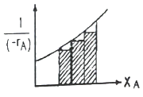
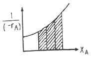
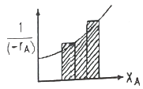
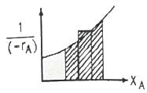
(정답률: 58%)
90. A의 3가지 병렬반응이 아래와 같을 때, S의 수율(S/A)을 최대로 하기 위한 조치로 옳은 것은? (단, 각각의 반응속도상수는 동일하다.)
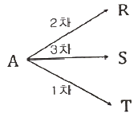
- 혼합흐름반응기를 쓰고 전화율을 낮게 한다.
- 혼합흐름반응기를 쓰고 전화율을 높게 한다.
- 플러그흐름반응기를 쓰고 전화율을 낮게 한다.
- 플러그흐름반응기를 쓰고 전화율을 높게 한다.
(정답률: 25%)
91. 효소발효반응(A→R)이 플러그흐름반응기에서 일어날 때, 95%의 전화율을 얻기 위한 반응기의 부피(m3)는? (단, A의 초기 농도(CA0) : 2mol/L, 유량(ν) : 25L/min 이며, 효소발효반응의 속도식은
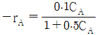
[mol/L·min] 이다.)- 1
- 2
- 3
- 4
(정답률: 30%)
92. 물리적 흡착에 대한 설명으로 가장 거리가 먼 것은?
- 다분자층 흡착이 가능하다.
- 활성화 에너지가 작다.
- 가역성이 낮다.
- 고체표면에서 일어난다.
(정답률: 46%)
93. 플러그흐름반응기에서의 반응이 아래와 같을 때, 반응시간에 따른 CB의 관계식으로 옳은 것은? (단, 반응초기에는 A만 존재하며, 각각의 기호는 CA0 : A의 초기농도, t : 시간, k : 속도상수이며, k2 = k1 + k3을 만족한다.)
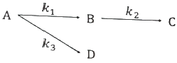
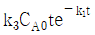
(정답률: 22%)
94. 어떤 반응의 속도상수가 25℃에서 3.46×10-5s-1이며 65℃에서는 4.91×10-3s-1 이였다면, 이 반응의 활성화 에너지(kcal/mol)는?
- 49.6
- 37.2
- 24.8
- 12.4
(정답률: 50%)
95. 반응기로 A와 C 기체 5:5 혼합물이 공급되어 A→4B 기상반응이 일어날 때, 부피팽창계수 εA는?
- 0
- 0.5
- 1.0
- 1.5
(정답률: 56%)
96. 성분 A의 비가역 반응에 대한 혼합흐름반응기의 설계식으로 옳은 것은? (단, NA : A 성분의 몰수, V : 반응기 부피, t : 시간, FA0 : A의 초기유입유량, FA : A의 출구 몰유량, rA : 반응속도를 의미한다.)
(정답률: 49%)
97. 혼합흐름반응기에 3L/h로 반응물을 유입시켜서 75%가 전환될 때의 반응기 부피(L)는? (단, 반응은 비가역적이며, 반응속도상수(k)는 0.0207/min, 용적변화율(ε)은 0이다.)
- 7.25
- 12.7
- 32.7
- 42.7
(정답률: 40%)
98. 기상 1차 촉매반응 A→R에서 유효인자가 0.8 이면 촉매기공내의 평균농도 와 촉매표면농도 CAS의 농도비( )로 옳은 것은?
- tanh(1.25)
- 1.25
- tanh(0.2)
- 0.8
(정답률: 22%)
99. 액상 1차 가역반응(A⇄R)을 등온반응시켜 80%의 평형전화율(XAe)을 얻으려 할 때, 적절한 반응온도(℃)는? (단, 반응열은 온도에 관계없이 –10000 cal/mol로 일정하고, 25℃에서의 평형상수는 300, R의 초기농도는 0 이다.)
- 75
- 127
- 185
- 212
(정답률: 34%)
100. 균질계 비가역 1차 직렬반응, 이 회분식반응기에서 일어날 때, 반응시간에 따르는 A의 농도 변화를 바르게 나타낸 식은?
(정답률: 25%)